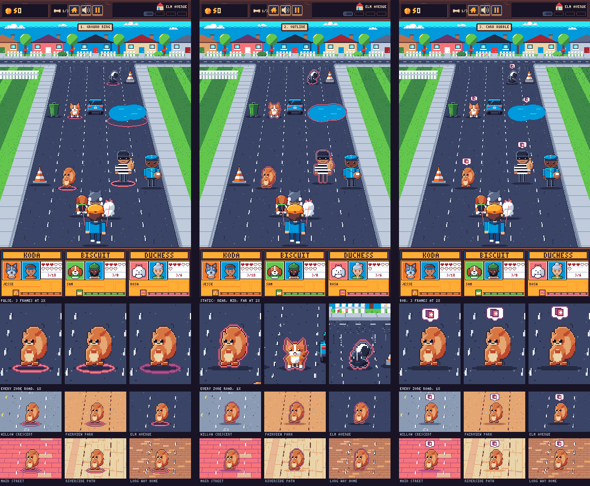
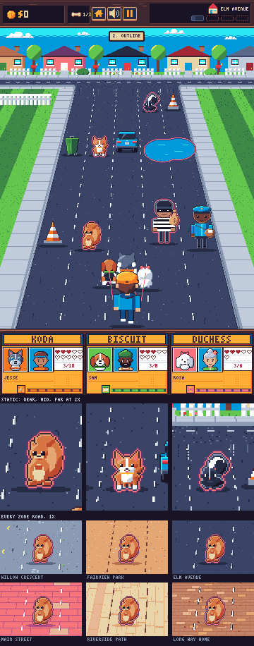
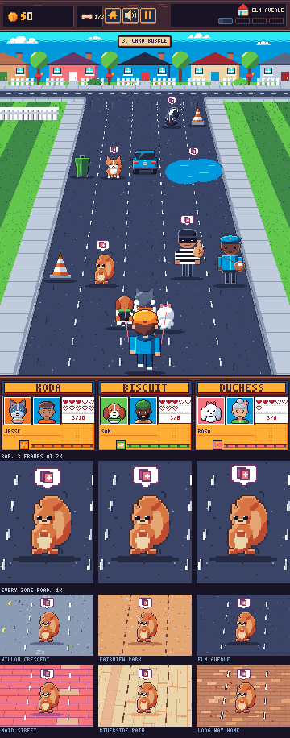
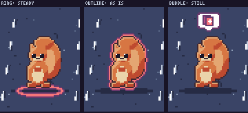

<!doctype html>
<html lang="en">
  <head>
    <meta charset="utf-8" />
    <meta name="viewport" content="width=device-width, initial-scale=1" />
    <title>Card cue</title>
    <link rel="icon" type="image/png" sizes="32x32" href="/art/favicon.png" />
    <link rel="icon" type="image/png" sizes="16x16" href="/art/favicon-16.png" />
    <link rel="stylesheet" href="/nav.css" />
    <script src="/nav.js" defer></script>
    <link rel="preconnect" href="https://fonts.googleapis.com" />
    <link rel="preconnect" href="https://fonts.gstatic.com" crossorigin />
    <link
      rel="stylesheet"
      href="https://fonts.googleapis.com/css2?family=Silkscreen&family=Atkinson+Hyperlegible:wght@400;700&display=swap"
    />
    <style>
      /* Three replacements for the card obstacles' "!", one fixed Elm Avenue scene each, at 1x and 2x. Frames are drawn by art/tools/mock_card_cue.py from the exported art. */
      :root {
        --bg: #13101e;
        --surface: #1d1a2c;
        --fg: #dfe4ee;
        --muted: #8b9bb4;
        --line: #33304a;
        --accent: #feae34;
        --f-display: "Silkscreen", ui-monospace, monospace;
        --f-body: "Atkinson Hyperlegible", system-ui, sans-serif;
        color-scheme: dark;
      }
      * {
        box-sizing: border-box;
      }
      body {
        margin: 0;
        background: var(--bg);
        color: var(--fg);
        font-family: var(--f-body);
        font-size: 15px;
        line-height: 1.5;
      }
      .wrap {
        max-width: 1560px;
        margin: 0 auto;
        padding-block: 24px 56px;
        padding-left: max(16px, env(safe-area-inset-left, 0px));
        padding-right: max(16px, env(safe-area-inset-right, 0px));
        display: grid;
        gap: 32px;
      }
      h1 {
        font-family: var(--f-display);
        font-weight: 400;
        font-size: clamp(22px, 4vw, 32px);
        line-height: 1.1;
        margin: 0;
      }
      h2 {
        font-family: var(--f-display);
        font-weight: 400;
        font-size: 18px;
        margin: 0;
        letter-spacing: 0.04em;
        color: var(--accent);
      }
      p,
      ul {
        margin: 0;
      }
      ul {
        padding-left: 18px;
        display: grid;
        gap: 4px;
      }
      .lede {
        color: var(--muted);
        max-width: 90ch;
      }
      section {
        display: grid;
        gap: 12px;
      }
      img {
        image-rendering: pixelated;
        image-rendering: crisp-edges;
        display: block;
        max-width: 100%;
        height: auto;
      }
      .row {
        display: flex;
        flex-wrap: wrap;
        gap: 16px;
        align-items: flex-start;
      }
      figure {
        margin: 0;
        background: var(--surface);
        border: 1px solid var(--line);
        border-radius: 6px;
        padding: 12px;
        display: grid;
        gap: 8px;
        min-width: 0;
      }
      figcaption {
        font-size: 13px;
        color: var(--muted);
        max-width: 46ch;
      }
      .x2 {
        width: 720px;
      }
      .scroll {
        overflow-x: auto;
        max-width: 100%;
      }
      table {
        border-collapse: collapse;
        font-size: 14px;
      }
      th,
      td {
        text-align: left;
        padding: 6px 10px;
        border-bottom: 1px solid var(--line);
        vertical-align: top;
      }
      th {
        font-family: var(--f-display);
        font-weight: 400;
  </head>
  <body>
    <main class="wrap">
      <header style="display: grid; gap: 8px">
        <h1>Card cue</h1>
        <p class="lede">
          Three replacements for the "!" over obstacles that open a card. Every frame is the same
          Elm Avenue scene in the current camera: card obstacles near (the squirrel and the thief,
          150 and 165 road px ahead), mid (the other dog and the puddle, 450 and 430) and far (the
          skunk, 680, near the far edge at 720), each at its depth step, with a plain obstacle
          beside each (cones, the mail carrier, a bin and the parked car). Under each frame: the
          cue's animation frames at 2x, then the near squirrel on every zone's road at 1x. Nothing
          here is built.
        </p>
        <p class="lede">
          All three use one colour pair: pink (f6757a) between purple (68386c) lines. Neither is a
          pickup colour (tips are amber and orange, the treat cream) or the hazard warning's
          (yellow on ink). Pink carries Elm Avenue (3.52:1) and purple the light roads: Willow
          Crescent 3.14, Fairview Park 4.22, Main Street 3.27, Riverside Path 6.11, The Long Way
          Home 2.89.
        </p>
      </header>

      <section>
        <h2>Side by side</h2>
        <div class="scroll">
          
        </div>
      </section>

      <section>
        <h2>1. Ground ring</h2>
        <p class="lede">
          A ring on the road under each card obstacle, drawn with its shadow and under its sprite,
          6 road px wider than the sprite each side and a third as tall as wide. Its band is 2px
          from the 0.75 step up and 1px below. It pulses in 3 frames: rest, 1px wider, 2px wider
          in mauve.
        </p>
        <div class="row">
          <figure>
            
            <figcaption>
              1x. Strip: the pulse's 3 frames on the near squirrel at 2x, then the squirrel's ring
              on every zone road.
            </figcaption>
          </figure>
          <figure>
            
            <figcaption>2x</figcaption>
          </figure>
        </div>
      </section>

      <section>
        <h2>2. Outline</h2>
        <p class="lede">
          A 2px outline round the card obstacle's sprite, pink inside purple, at every depth. It
          is static, so it needs no reduced-motion form.
        </p>
        <div class="row">
          <figure>
            
            <figcaption>
              1x. Strip: the squirrel (near), the other dog (mid) and the skunk (far) at 2x, then
              the squirrel on every zone road.
            </figcaption>
          </figure>
          <figure>
            
            <figcaption>2x</figcaption>
          </figure>
        </div>
      </section>

      <section>
        <h2>3. Card bubble</h2>
        <p class="lede">
          A white speech bubble with a purple line and two fanned playing cards (a pink one with a
          white diamond in front of a mauve one), 21 by 18 px at 1x where the "!" is 10 rows, drawn
          at the obstacle's scale over its top. The bubble bobs 1 then 2px; the obstacle stays
          still, where a pickup bobs as a whole.
        </p>
        <div class="row">
          <figure>
            
            <figcaption>
              1x. Strip: the bob's 3 frames on the near squirrel at 2x, then the squirrel's bubble
              on every zone road.
            </figcaption>
          </figure>
          <figure>
            
            <figcaption>2x</figcaption>
          </figure>
        </div>
      </section>

      <section>
        <h2>Reduced motion</h2>
        <p class="lede">
          Each cue's still form, cropped round the near squirrel at 2x: the ring held at its rest
          size in pink, the outline unchanged, and the bubble held at its rest height.
        </p>
        <figure>
          
          <figcaption>Ring, outline and bubble with motion reduced, 2x.</figcaption>
        </figure>
      </section>
    </main>
  </body>
</html>
